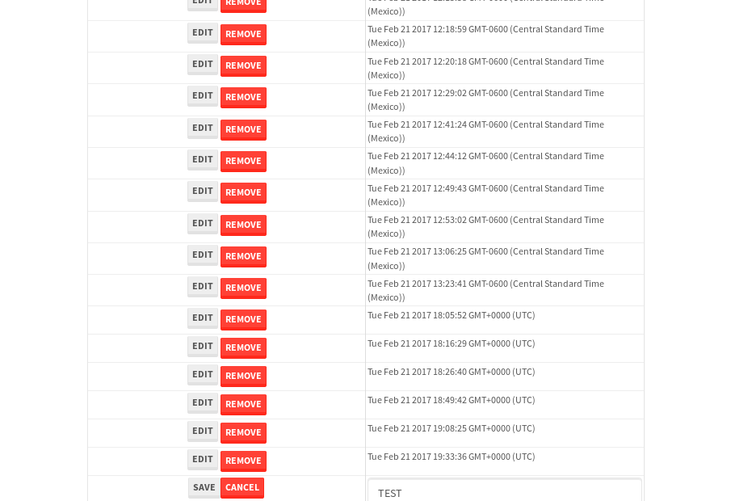

tbColumn.Grid Sorting - 26.589sTests: 5Skipped: 0Failures: 0 should sort data in ascending order then on descending order when sorting by Order Id column - 6.695sTests passed: 100.00%should order data in ascending order when click-sorting an unsorted text column - 4.662sTests passed: 100.00%should order data in descending order when click-sorting an ascending-sorted text column - 5.051sTests passed: 100.00%should order data in ascending order when click-sorting an unsorted date column - 4.713sTests passed: 100.00%should order data in descending order when click-sorting twice an unsorted date column - 5.468sTests passed: 100.00%
tbEmptyForm - 3.301sTests: 3Skipped: 0Failures: 1 should have an empty required field - 0.764sTests passed: 100.00%should not be able to click on save - 0.466sExpected null not to be null null.✗Tests passed: 50.00%should load default value for numeric field - 0.49sTests passed: 100.00%
Tubular Filters.tbColumnFilter - 105.889sTests: 12Skipped: 0Failures: 0 should cancel filtering when clicking outside filter-popover - 8.89sTests passed: 100.00%should disable Value text-input for "None" filter - 6.607sTests passed: 100.00%should disable apply button for "None" filter - 6.753sTests passed: 100.00%should decorate popover button when showing data is being filtered for its column - 11.865sTests passed: 100.00%should correctly filter data for the "Equals" filtering option - 8.216sTests passed: 100.00%should correctly filter data for the "Not Equals" filtering option - 7.97sTests passed: 100.00%should correctly filter data for the "Contains" filtering option - 8.019sTests passed: 100.00%should correctly filter data for the "Not Contains" filtering option - 8.448sTests passed: 100.00%should correctly filter data for the "Starts With" filtering option - 6.868sTests passed: 100.00%should correctly filter data for the "Not Starts With" filtering option - 6.946sTests passed: 100.00%should correctly filter data for the "Ends With" filtering option - 6.994sTests passed: 100.00%should correctly filter data for the "Not Ends With" filtering option - 7.206sTests passed: 100.00%
Tubular Filters.tbColumnDateTimeFilter - 134.173sTests: 12Skipped: 0Failures: 0 should cancel filtering when clicking outside filter-popover - 7.176sTests passed: 100.00%should disable Value text-input for "None" filter - 6.352sTests passed: 100.00%should disable apply button for "None" filter - 6.552sTests passed: 100.00%should clear filtering when clicking on Clean button - 17.54sTests passed: 100.00%should decorate popover button when showing data is being filtered for its column - 12.158sTests passed: 100.00%should correctly filter data for the "Equals" filtering option - 7.003sTests passed: 100.00%should correctly filter data for the "Not Equals" filtering option - 6.948sTests passed: 100.00%should correctly filter data for the "Between" filtering option - 11.841sTests passed: 100.00%should correctly filter data for the "Greater-or-equal" filtering option - 11.858sTests passed: 100.00%should corretlly filter data for the "Greater" filtering option - 12.095sTests passed: 100.00%should correctly filter data for the "Less-or-equal" filtering option - 12.081sTests passed: 100.00%should correctly filter data for the "Less" filtering option - 12.039sTests passed: 100.00%
Tubular Filters.tbColumnOptionsFilter - 80.74sTests: 3Skipped: 0Failures: 0 should cancel filtering when clicking outside filter-popover - 8.771sTests passed: 100.00%should decorate popover button when showing data is being filtered for its column - 11.466sTests passed: 100.00%should filter column-elements in accordance to the selected filter when selecting a single option - 49.664sTests passed: 100.00%
Tubular Filters.tbTextSearch - 48.474sTests: 5Skipped: 0Failures: 0 min-chars is not set - 0.975sTests passed: 100.00%should filter data in searchable-column customer name to matching inputted text, starting from 3 characters - 7.064sTests passed: 100.00%should filter data in searchable-column shipper city to matching inputted text, starting from 3 characters - 12.206sTests passed: 100.00%should show clear button when there is inputted text only - 6.589sTests passed: 100.00%should clear filtering when clicking clear button - 16.222sTests passed: 100.00%
tbForm related components.tbCheckboxField - 7.419sTests: 2Skipped: 0Failures: 0 should save changes on "SAVE" - 3.398sTests passed: 100.00%should discard changes on "CANCEL" - 2.652sTests passed: 100.00%
tbForm related components.tbDropDownEditor - 11.162sTests: 5Skipped: 0Failures: 0 should set initial input value to the value of "value" attribute when defined - 1.677sTests passed: 100.00%should show the component name value in a label field when "showLabel" attribute is true - 1.545sTests passed: 100.00%should show a help field equal to this attribute, is present - 1.577sTests passed: 100.00%should submit modifications to item/server when clicking form "Save" - 3.69sTests passed: 100.00%should NOT submit modifications to item/server when clicking form "Cancel" - 1.977sTests passed: 100.00%
tbForm related components.tbTextArea - 15.262sTests: 7Skipped: 0Failures: 0 should set initial input value to the value of "value" attribute when defined - 1.709sTests passed: 100.00%should be invalidated when the number of chars is not in the range of "min" and "max" attributes - 2.487sTests passed: 100.00%should show the component name value in a label field when "showLabel" attribute is true - 1.575sTests passed: 100.00%should show a help field equal to this attribute, is present - 1.658sTests passed: 100.00%should require the field when the attribute "required" is true - 1.745sTests passed: 100.00%should submit modifications to item/server when clicking form "Save" - 3.419sTests passed: 100.00%should NOT submit modifications to item/server when clicking form "Cancel" - 1.997sTests passed: 100.00%
tbForm related components.tbDateEditor - 13.085sTests: 6Skipped: 0Failures: 0 should set initial date value to the value of "value" attribute when defined - 1.543sTests passed: 100.00%should be invalidated when the date is not in the range of "min" and "max" attributes - 2.479sTests passed: 100.00%should show the component name value in a label field when "showLabel" attribute is true - 1.618sTests passed: 100.00%should show a help field equal to this attribute, is present - 1.613sTests passed: 100.00%should submit modifications to item/server when clicking form "Save" - 2.268sTests passed: 100.00%should NOT submit modifications to item/server when clicking form "Cancel" - 2.802sTests passed: 100.00%
tbForm related components.tbTypeaheadEditor - 16.727sTests: 7Skipped: 0Failures: 0 should show an options list when there is an API-info/component entered-data - 2.014sTests passed: 100.00%should select the option clicked - 1.902sTests passed: 100.00%should show a "delete" button when an option/match is selected, and delete the option if button is clicked - 2.664sTests passed: 100.00%should show a label value equal to the component name when "showLabel" attribue is true - 1.888sTests passed: 100.00%should require a value when "require" attribute is true - 2.129sTests passed: 100.00%should submit modifications to item/server when clicking form "Save" - 2.875sTests passed: 100.00%should NOT submit modifications to item/server when clicking form "Cancel" - 2.644sTests passed: 100.00%
tbForm related components.tbSimpleEditor - 19.629sTests: 9Skipped: 0Failures: 0 should set initial input value to the value of "value" attribute when defined - 1.617sTests passed: 100.00%should be invalidated when the number of chars is not in the range of "min" and "max" attributes - 2.023sTests passed: 100.00%should show the component name value in a label field when "showLabel" attribute is true - 1.74sTests passed: 100.00%should set input placeholder to the value of "placeholder" attribute - 2.284sTests passed: 100.00%should validate the control using the "regex" attribute, if present - 1.724sTests passed: 100.00%should show a help field equal to this attribute, is present - 1.721sTests passed: 100.00%should require the field when the attribute "required" is true - 1.811sTests passed: 100.00%should submit modifications to item/server when clicking form "Save" - 3.645sTests passed: 100.00%should NOT submit modifications to item/server when clicking form "Cancel" - 2.287sTests passed: 100.00%
tbForm related components.tbNumericEditor - 16.519sTests: 7Skipped: 0Failures: 0 should set initial component value to the value of "value" attribute when defined - 1.663sTests passed: 100.00%should be invalidated when the entered number is not in the range of "min" and "max" attributes - 2.197sTests passed: 100.00%should show the component name value in a label field when "showLabel" attribute is true - 2.442sTests passed: 100.00%should show a help field equal to this attribute, is present - 1.973sTests passed: 100.00%should require the field when the attribute "required" is true - 1.795sTests passed: 100.00%should submit modifications to item/server when clicking form "Save" - 3.291sTests passed: 100.00%should NOT submit modifications to item/server when clicking form "Cancel" - 2.267sTests passed: 100.00%
tbForm Connection Error NoModelKey - 2.897sTests: 1Skipped: 0Failures: 0 tbForm connection error functionality - 0.539sTests passed: 100.00%
tbForm Connection Error NoServerUrl - 2.31sTests: 1Skipped: 0Failures: 0 tbForm connection error functionality - 0.455sTests passed: 100.00%
tbGridComponents - 49.832sTests: 6Skipped: 0Failures: 4 should add item with newRow method - 4.804sExpected 'EDIT REMOVE Tue Feb 21 2017 20:24:53 GMT+0000 (UTC)' not to be 'EDIT REMOVE Tue Feb 21 2017 20:24:53 GMT+0000 (UTC)'.✗Tests passed: 50.00%should add item with newRow method and cancel action - 1.309sTests passed: 100.00%should update item with tbSaveButton - 19.551sExpected '' to be 'TEST'.✗Tests passed: 0.00%should NOT update item on cancel Update action - 0.789sFailed: ElementNotVisibleError✗Tests passed: 0.00%should remove item with tbRemoveButton - 20.916sExpected 100 not to be 100, 'should remove the row from the table'.✗Tests passed: 50.00%should NOT remove item on cancel Remove action - 1.114sTests passed: 100.00%
tbGridPager.navigation buttons - 8.832sTests: 1Skipped: 0Failures: 0 should perform no action when clicking on the numbered navigation button corresponding to the current-showing results page - 1.264sTests passed: 100.00%
tbGridPager.navigation buttons.first/non-last results page related functionallity - 3.433sTests: 2Skipped: 0Failures: 0 should disable "first" and "previous" navigation buttons when in first results page - 1.723sTests passed: 100.00%should enable "last" and "next" navigation buttons when in a results page other than last - 1.71sTests passed: 100.00%
tbGridPager.navigation buttons.last/non-first results page related functionallity - 4.134sTests: 2Skipped: 0Failures: 0 should disable "last" and "next" navigation buttons when in last results page - 2.198sTests passed: 100.00%should enable "first" and "previous" navigation buttons when in a results page other than first - 1.935sTests passed: 100.00%
tbGridPager.page navigation - 7.098sTests: 5Skipped: 0Failures: 0 should go to next results page when clicking on next navigation button - 1.564sTests passed: 100.00%should go to previous results page when clicking on previous navigation button - 1.673sTests passed: 100.00%should go to last results page when clicking on last navigation button - 1.384sTests passed: 100.00%should go to first results page when clicking on first navigation button - 1.285sTests passed: 100.00%should go to corresponding results page when clicking on a numbered navigation button - 1.191sTests passed: 100.00%
tbGridPagerInfo - 4.535sTests: 2Skipped: 0Failures: 0 should show text in accordance to numbered of filter rows and current results-page - 1.51sTests passed: 100.00%should show count in footer - 0.66sTests passed: 100.00%
tbHttp - 16.314sTests: 8Skipped: 1Failures: 1 should be authenticated - 2.476sTests passed: 100.00%retrieve data - 2.204sTests passed: 100.00%should not login bad credentials - 2.346sExpected '' to be 'false'.✗Tests passed: 0.00%should have a refresh token - 2.416sTests passed: 100.00%should remove authentication - 2.198sTests passed: 100.00%get method-Is not authenticated - 2.272sTests passed: 100.00%post method-Is not authenticated - 2.402sTests passed: 100.00%should regenerate access token on post - 0s***Skipped***Tests passed: 0%
tbPageSizeSelctor - 9.416sTests: 4Skipped: 0Failures: 0 should filter up to 10 data rows per page when selecting a page size of "10" - 2.059sTests passed: 100.00%should filter up to 20 data rows per page when selecting a page size of "20" - 1.513sTests passed: 100.00%should filter up to 50 data rows per page when selecting a page size of "50" - 2.469sTests passed: 100.00%should filter up to 100 data rows per page when selecting a page size of "100" - 1.881sTests passed: 100.00%
tbRowSelectable - 8.826sTests: 2Skipped: 0Failures: 0 selected rows - 4.657sTests passed: 100.00%unselected rows - 2.675sTests passed: 100.00%
tbSingleForm - 18.461sTests: 8Skipped: 1Failures: 0 should load correct info - 0s***Skipped***Tests passed: 0%should change customer name - 2.452sTests passed: 100.00%should save it - 2.859sTests passed: 100.00%should clear the inputs - 2.359sTests passed: 100.00%should update - 2.747sTests passed: 100.00%should reset editor - 2.243sTests passed: 100.00%should not save if not Changes - 2.451sTests passed: 100.00%should not be able to click on save - 3.349sTests passed: 100.00%


{kind=link}